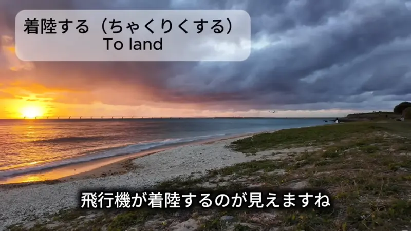
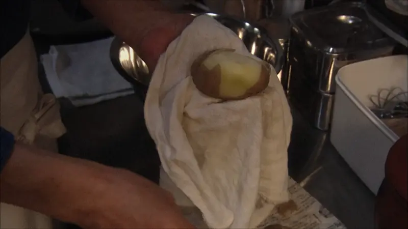
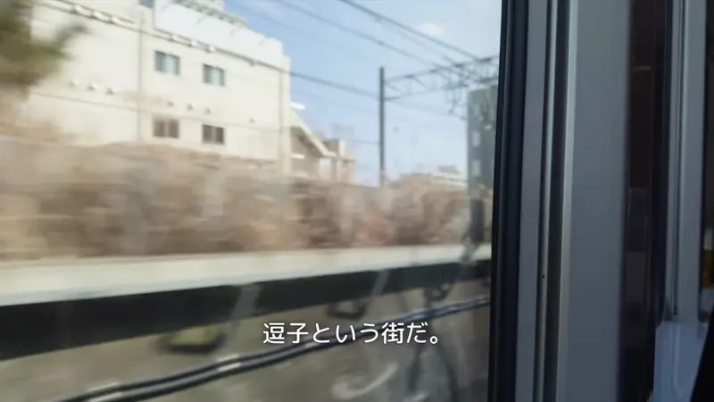
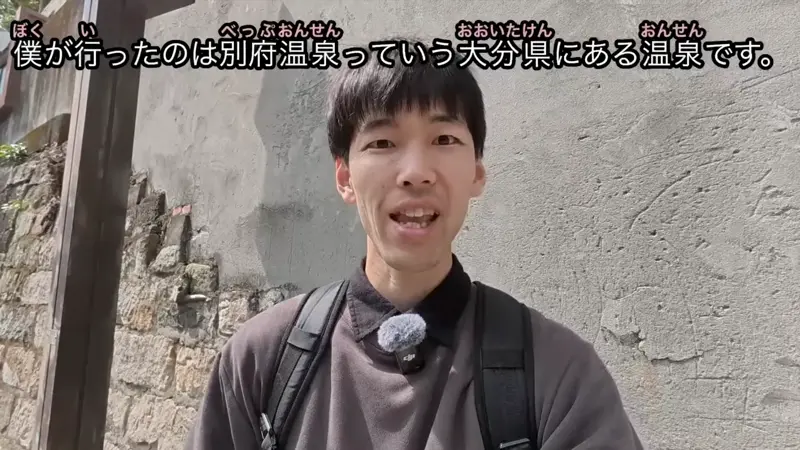

のは・のが
Source unknown
昼間に山道を歩くのは楽しいです
"Walking along the mountain path during the day is fun."
の turns an action into a thing, like "-ing" in English. It goes right after a verb in plain form: 歩く (walk) + の = "walking".
昼間に山道を歩く is "walk the mountain path in the daytime". Add の and the whole action becomes one thing, は makes it the topic, and 楽しいです says what it's like. It answers "How is it, walking there?".
のが works the same way with words like 好き and 得意: 歩くのが好き, "I like walking".
Examples
A friend asks what you do on weekends. You love swimming.
泳ぐのが好き。
"I like swimming."
の works like English "-ing": swim becomes swimming.
の = the actYour alarm goes off at 5am, it's dark and cold.
朝早く起きるのはつらい。
"Getting up early is rough."
The whole chunk 朝早く起きる becomes one thing, then は: as for that, it's rough.
の = the actAt a party, someone asks who made the cake.
ケーキを作ったのは母だ。
"The one who made the cake is my mom."
Everyone knows someone made it. The answer comes last, like a reveal.
の = the oneBack from a trip to Japan, a friend asks about the food.
一番おいしかったのはラーメンだった。
"The thing that was tastiest was the ramen."
の = the thingWith and without
泳ぐが好き。 ✗
Broken. Like "I like swim". が needs a thing, and 泳ぐ is an action.
泳ぐのが好き。
"I like swimming." の turns the action into a thing.
母がケーキを作った。
"Mom made the cake." Just the plain fact.
ケーキを作ったのは母だ。
"The one who made the cake? Mom." Same fact, but the answer is saved for the end.
When to add な
Noun or な-adjective right before の? Put な in between. Verbs and い-adjectives get nothing.
泳ぐのが好き。 寒いのが苦手。
Nothing added.
静かなのがいい。
"Quiet is good." Add な.
Sentence mining

YouTube · video
飛行機が着陸するのが見えますね。
"You can see the plane landing."
見える (can see) needs a thing in front of が, like 山が見える. 着陸する (to land) is a verb, so it gets の first: "the landing".

Source unknown
俺が店に来て最初に作るのは、ポテトサラダだ。
"The first thing I make when I get to the shop is potato salad."
の = the thing. Same reveal as the cake: "the first thing I make is... potato salad."

YouTube · video
今日行くのは、逗子という街だ。
"Where I'm going today is a town called Zushi."
の = the place. "The place I'm going today is... Zushi." The answer comes last.
YouTube · video
名古屋に来るのは１年ぶりぐらいです。
"It's been about a year since I last came to Nagoya."
の = the act. 名古屋に来る (coming to Nagoya) becomes one thing. Then は: as for that, it's been about a year.

YouTube · video
僕が行ったのは別府温泉っていう大分県にある温泉です。
"The place I went was Beppu Onsen, a hot spring in Oita."
の = the place. Same reveal as 今日行くのは: the answer comes last.
Pokémon: Indigo League · Episode 3
まずポケモン勝負で弱らせるのが基本なんだから!
"You weaken it in a Pokémon battle first, that's the basics!"
の = the act. The whole chunk ポケモン勝負で弱らせる (weakening it in a battle) becomes one thing, and that thing is the basics.